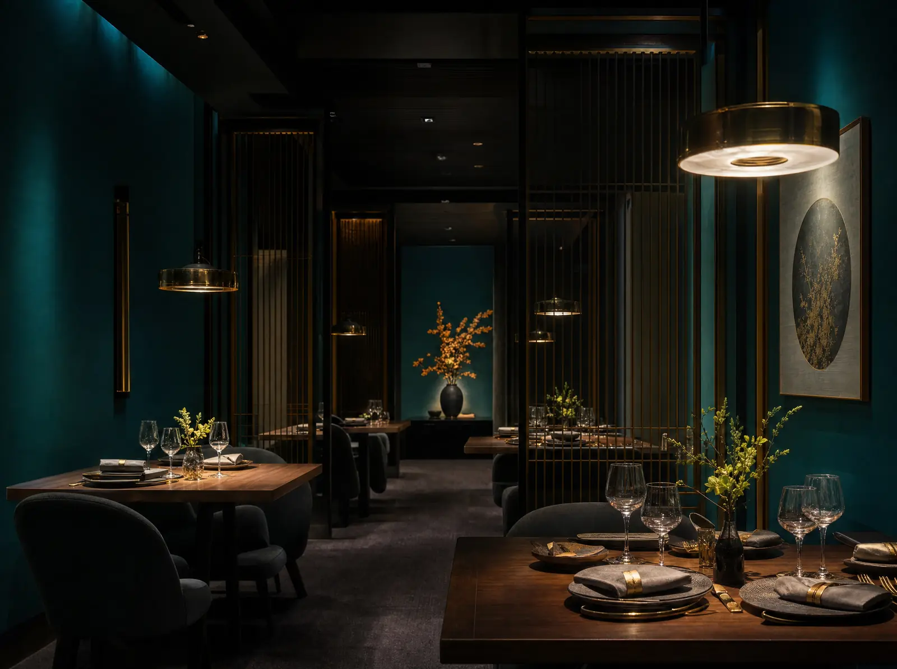
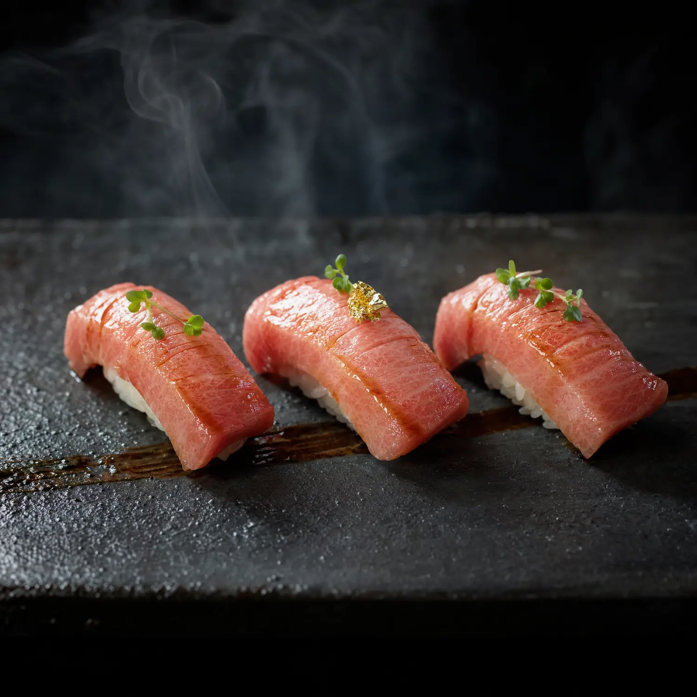
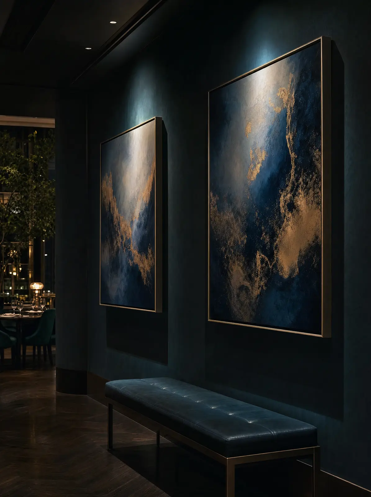
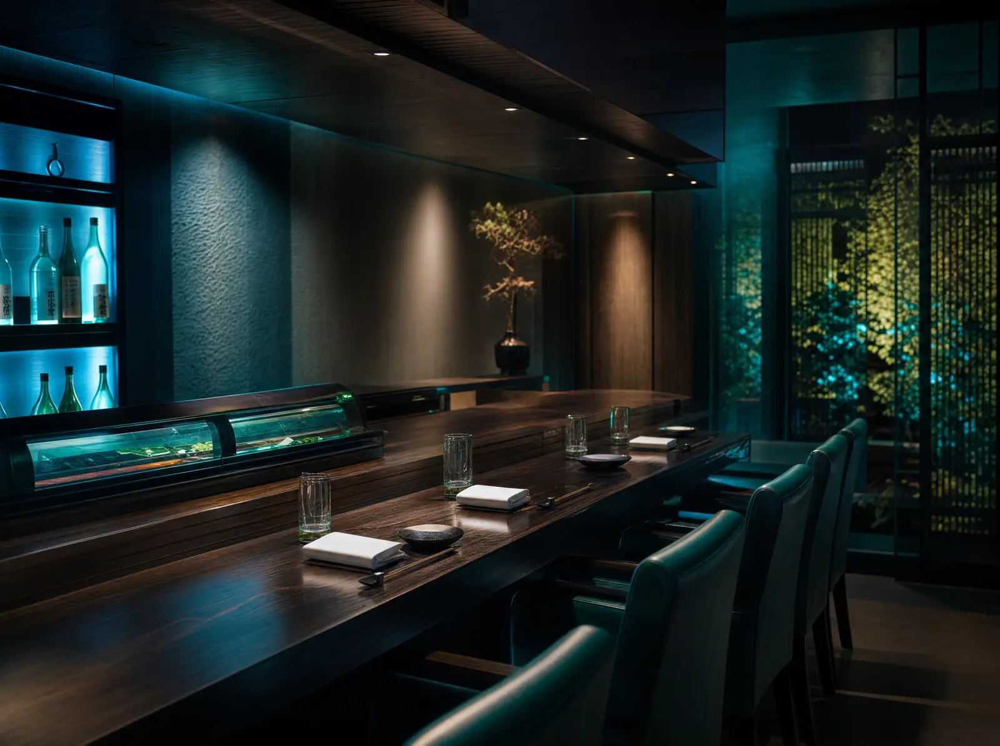
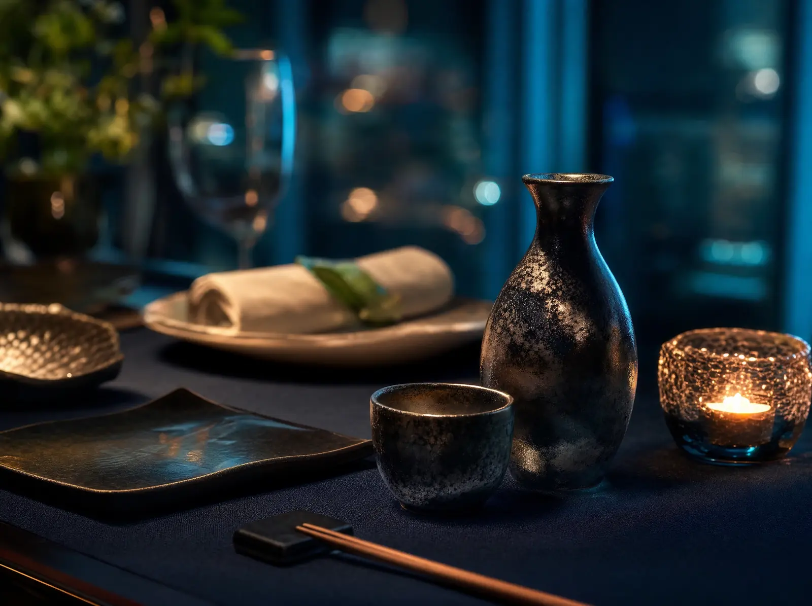

Where art
meets cuisine
Nestled on Chinggis Avenue in the heart of Ulaanbaatar, Bluefin Cuisine d'Art is more than a restaurant — it is a living gallery, where Japanese culinary precision meets a curated collection of fine art.
Every plate is composed with the discipline of ikebana. Our chefs bring together the ocean's finest bluefin tuna, locally-sourced Mongolian lamb, and seasonal ingredients to create dishes that honour both tradition and imagination. The open kitchen is a stage; every evening, theatre unfolds.
Rating
in Ulaanbaatar
Choice

A discipline of precision
Rice seasoned with exact proportions of vinegar, sugar and salt; nori chosen for its deep ocean aroma.
A single-edge yanagiba blade. Each stroke one fluid, pulling motion — never a saw.
The blade descends in one decisive stroke, revealing the vibrant heart of the fish.
Arranged with the care of ikebana. Colour, height, spacing — the plate is a canvas.

The signature. Marbled fatty bluefin tuna over seasoned rice, a brush of soy and a whisper of gold leaf.
The space & the gallery
A hidden world-class art gallery sits above the dining room — guests call it a stunning surprise. Below, the open kitchen glows like a tide pool in the dark.

Art Gallery
Omakase Counter
The DetailWhat our guests say
Very unassuming from outside but lovely inside. Really professional service and all food fantastic. Sushi was really good — so good we had dinner twice and lunch. Best place we tried in UB.
Of the many good restaurants we ate at in Mongolia, this was my favourite. Wonderful presentation. I couldn't believe I was in Mongolia. Hidden world-class art gallery upstairs — stunning.
Regularly come here for lunch — quality of food is amazing, value for money exceptional and great service. Tip: arrive 10–15 minutes before noon to beat the rush!
Visit Bluefin
Ulaanbaatar, Mongolia